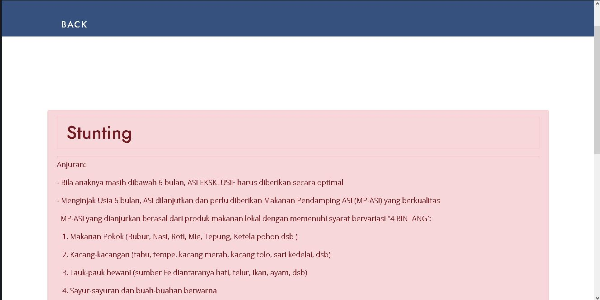
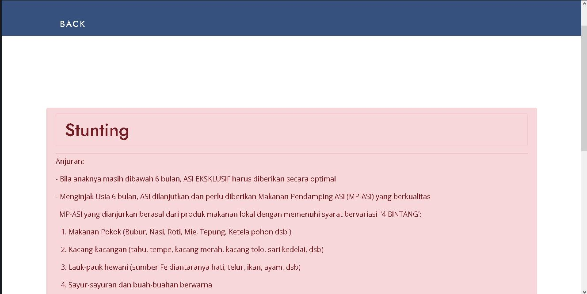

Project
Related Project

 

Stunting is a condition where children experience growth failure due to malnutrition for a long time, this condition can be clearly seen from the height of the child which looks different from his peers. In this study, the author discusses stunting data taken from January to October 2020 in Pitu District, Ngawi Regency. The study was conducted using a random forest algorithm to predict stunting in toddlers and developing a system in the form of website and android-based software that is able to measure stunting in toddlers. The results obtained are learning from the data obtained and training is carried out so that the machine learning model is able to work and predict results for different data cases with the same parameters. This study was able to produce an average accuracy value of 97.87% using 10-fold cross validation.
for more information about this project you can check on my jurnal in this link
My proceeding